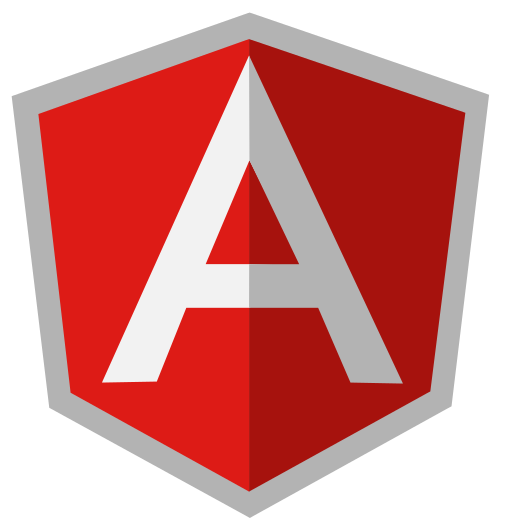
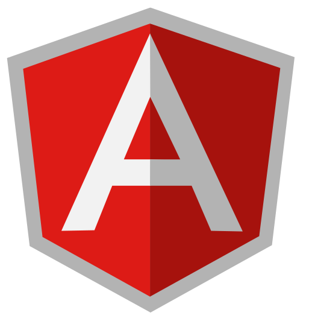

ES2015 & TypeScript
(and tools you need to use them)
Questions answered:
What are ES2015 & Typescript?
Why are they important?
What can I do with them?
How can I use them today?
What is it?
ECMAScript
"The Language of the Web" (specification implemented by JS)
ES2015 / ES6 / ESHarmony
The 6th and current version of ECMAScript
Because its JavaScript.
which is the language of the web , remember?
Don't confuse ES2015 in the framework wars!
JS isn't going anywhere anytime soon
ES2015 is not a framework. It is foundational.
Modern frameworks are lean.
Libs/frameworks rely more and more on plain JS.
Learn the language, not just libraries/frameworks.
Let's look at some trends...
A history of web technology (last 20 years)
Let's focus in on a few of these segments
The web browser has become a mature platform.
Browsers are getting more powerful (differentiate between "web" and "browsers" [i.e. front-end])
Graphics and display
Data storage and manipulation
Indications of a mature platform
The increasing power in browsers makes plugin-based tech obsolete
Why did these exist? Lack of power in browsers
Writing was on the wall as far back as 2010 (Tobias Schneider's (now at Spotify) "Gordon")
link
Talks to how the JS community has evolved and reacted to a changing platform
Evolution of js frameworks and libraries (previously intended to fill language/platform gaps, now more focused, expect dev to leverage powerful language features)
2005 dojo/jquery/mootools focused on providing utilities
angular/ember/react focus on app architecture and leverage es2015/TS
CoffeeScript is an interesting case - attempt at "smarter" js via transpilation, influenced ES Harmony
A few of my favorite (ES2015) things...
Arrow Functions
ES5
function Person() {
var self = this; // might also dojo/_base/lang or $.proxy
self.age = 0;
setInterval(function growUp() {
self.age++;
}, 1000);
}
ES2015
function Person(){
this.age = 0;
setInterval(() => {
this.age++; // `this` refers to Person
}, 1000);
}
var p = new Person();
Arrow functions pass scope (lexical scoping). No more lang.hitch!
Promises + Arrows = Syntactical Awesomeness
function makeRequest() {
return new Promise((resolve, reject) => {
$.ajax('config.json', {
success: (data, status, xhr) => {
resolve(data);
},
error: (xhr, status, error) => {
reject(error);
}
});
});
}
makeRequest.then(response => {
return response;
})
Promises + Arrow functions makes for a nice syntax.
Template Strings
ES5
sayHello(person) {
return 'Whats up' + person + '!';
}
ES2015
sayHello(person) {
return `Whats up ${person}!`;
}
let comment = `In ES2015 this is
totally legal!`
ES2015 makes it easier to work with strings - much like lang.replace (but native!)
Modules
lib/math.js
export function sum(x, y) {
return x + y;
}
export var pi = 3.141593;
app.js
import * as math from 'lib/math';
alert('2π = ' + math.sum(math.pi, math.pi));
otherApp.js
import { sum, pi } from 'lib/math';
alert('2π = ' + sum(pi, pi));
Modules will eventually eliminate the need for AMD or CommonJS
Classes + Inheritance
class Animal {
constructor(name) {
this.name = name;
}
speak() {
console.log(`${this.name} makes a noise.`);
}
}
class Dog extends Animal {
speak() {
console.log(${this.name} barks.`);
}
}
Object Oriented Programming without a framework to do the heavy lifting!
But wait, there's more!
This is a great place to familiarize yourself with the new features of ES2015.
GAVIN - So the ES6 features are in front of us and we're all excited to use them! But are they all supported? As of today, we CAN NOT use all ES6 features out of the box on all browsers.
As of today, we CAN NOT use all ES6 features out of the box on all browsers.
The ECMAScript Compatibility Table, a repository maintained on GitHub, has become the de-facto standard to see where we're at in the browser race to the ES2015 finish line. At the top you can see a quick summary of what what percent ES2015 coverage certain browsers and transpilers have. For example, Babel is at 73%, Traceur is at 60% and my current Browser, Chrome, is at 81%. The lower numbers really illustrate why we're talking about tooling today - likely a lot of the ES2015 code you write will be supported by the latest Chrome or FireFox browsers (they're in the 70s and 80s percent coverage), but if you need your code to work on older browsers - or even IE11 - you need to use a transpiler.
So how can we use ES2015 today ?
A transpiler, short for "source-to-source compiler", is a tool that takes the source code of a program written in one programming language as its input and produces the equivalent source code in another programming language. So as of today, to be able to write ES2015 code but have it work on all the browsers out there, we must TRANSPILE our code to the older ES5 standard. We can do that using multiple tools, including Babel, Traceur, and even Typescript, which we'll talk about later in this talk.
Using Transpilers in Your Workflow
So our transpilers simply convert our code from ES2015 to ES5 so it will run in all browsers. But as we're writing our code, we probably want to do even more at transpile-time, like packaging our code into a single file. For that, we have two tools at our disposal: BROWSERIFY and WEBPACK. [ARROW] Browserify lets you use "nodejs require" syntax in the browser by bundling up all of your dependencies. Webpack is similar, but it has more features built in, accessed by the "webpack.config" file. .... [ARROW] We'll use the NPM scripts functionality and Grunt as our task runners. These tools help us with automation - we'll specify either a shell command or a series of Grunt tasks to run, to run babel, webpack, and/or browserify in the correct order and in one command. We'll show you a few examples of that now.
Typescript is a superset of JavaScript, providing features on top of JavaScript that can help you code more efficiently. Let's get a show of hands - who here has used TypeScript on a project before? Who has not? So my promise for this half of the talk is to give you the tools to enable you to use TypeScript in your projects TODAY!
TypeScript is unique, compared to other languages that compile to JavaScript. Plain JavaScript IS VALID TYPESCRIPT. You can just change the file extension from js to ts, send them though the TypeScript compiler, and it will work fine. In this way TypeScript BUILDS on the success of JavaScript, while improving on some aspects.
** inspiration for some of these comments, and more good information, can be found at http://stackoverflow.com/a/35048303
Many projects and companies are using Typescript. Sitepen is using Typescript to develop Dojo 2, the new version of Dojo. This doesn't mean you must develop your applications in Typescript -- simply that they are writing the underlying toolkit code in Typescript. AngularJS, a popular JavaScript Framework, has chosen to focus on Typescript for Angular 2, which is currently in beta - so unlike Dojo, if you're going to use Angualar2, you pretty much need to be using Typescript in your applications.
TypeScript Features
Now I'll now go through a few of the features of TypeScript, so you can see what is so great about it!
Type Annotations
ES2015:
function greet(name, age) {
return `Hello, ${name}, you are ${age} years of age.`;
}
TypeScript:
function greet(name: string, age: number) {
return `Hello, ${name}, you are ${age} years of age.`;
}
All of the ES2015 code styles we've been showing so far still apply in the TypeScript world. But you can add things that help you be more efficient. One example is type annotations on functions. ... As we know, JavaScript is dynamically typed. This means JavaScript does not know what type a variable is until it is actually instantiated at run-time, but that is often too late and causes an error. TypeScript adds type support to JavaScript. Bugs that are caused by false assumptions of some variable being of a certain type can be completely avoided if you use Type Annotations. ... The syntax is quite simple - you can see in this example, you just put a colon after the function parameter, and define what type it is. The types that TypeScript support include all the JavaScript types, plus enum, "any", and void. Let's see these types in action [DEMO].
Interfaces
One of TypeScript's core principles is that type-checking focuses on the 'shape' that values have. This is called "duck typing", named after the classic expression "If it looks like a duck, swims like a duck, and quacks like a duck, then it probably is a duck." So if Typscript is just looking at the "shape" of values when determining type, giving names to particular structures would make things easier. That's what interfaces are.
Interfaces
TypeScript (no interface):
function greet(person : {name: string, age: number}) {
return `Hello, ${person.name}, you are ${person.age} years of age.`;
}
var user = {name: "Jack White", age: 40};
document.body.innerHTML = greet(user);
TypeScript:
interface Person {
name: string;
age: number;
}
function greet(person : Person) {
return `Hello, ${person.name}, you are ${person.age} years of age.`;
}
var user = {name: "Jack White", age: 40};
document.body.innerHTML = greet(user);
In this example, if you look at the very first line, we have a function, "greeter", that takes a single parameter, "person", which is an object that has a few properties in it. Because we're in TypeScript, if you tried to call this function with an object that didn't match those properties (firstname and lastname), the compiler would give you an error. To make our code more reusable and readable, let's turn that parameter into an interface. In the second code block, you see that we are defining an interface using the "interface" keyword, calling it "Person" and defining our object. Then in our function definition instead of putting the full object in the parameters list, we can just put the name of our interface. So clean!
Classes - Access Modifiers
ES2015:
class Animal {
name;
constructor(theName) {
this.name = theName;
}
}
const cat = new Animal("Cat");
document.body.innerHTML = cat.name;
TypeScript:
class Animal {
private name: string;
constructor(theName: string) { this.name = theName; }
}
const cat = new Animal("Cat");
document.body.innerHTML = cat.name; // Error: 'name' is private;
In TypeScript you can use all the features of ES2015 Classes syntax. TypeScript does allow adding of "Access Modifiers (aka Public/Private modifiers)" additionally. Members of a class are public by default, but may be marked private. When a memer is marked private, it cannot be accessed from outside of its containing class. In our example, there is no way to prevent the code outside the class from accessing the name property in ES2015, but with TypeScript that line will recieve an error. More info: https://github.com/Microsoft/TypeScript-Handbook/blob/master/pages/Classes.md
Additional Features
Decorators
Abstract classes
Namespace (Module)
Enums
Generics and Static typing
Optional properties and arguments
Function overloads
And TypeScript has even more features that don't yet exist in ES6 or beyond (although some of them may be in a future version of JavaScript). We don't have time to go through examples of them all, so let's get into one last example where I can make good on my promise of showing you how to convert an actual web mapping app to TypeScript LIVE. [DEMO]
So you may be asking yourself, SHOULD I jump in on the TypeScript bandwagon? If you're looking at the amount of risk, you probably have 2 extremes, on one extreme is just using ES2015 and a transpiler like Babel (like we talked about in the first half of the talk). This is the least risky - you know that JavaScript will be supported for a really long time - it's "the language of the web". On the other side are languages totally different from JavaScript, like Dart, Elm, etc - these have great features, but are riskier in that they don't have a guaranteed rate of adoption. TypeScript is a great compromise - it adds some great features if you're looking for them, all while being a superset of JavaScript. That, and the fact that 2015/2016 seem like big years for TypeScript adoption - with popular toolkits adopting it like Angular, Dojo, and even the Esri JS API - make your devision to try TypeScript a really great one for your next project!
Interested in TypeScript?
Using TypeScript with ArcGIS JS API Development
Rene and Dasa - These guys know so much more about this topic it's not even funny.
So wrapping up our discussion on ES6, transpilers, typescript, and general tooling ... The bottom line is we should all be super grateful we live in such a great time for the web and software development in general. We have so many options to build the exact stack of tools that you want to use. If you're on the web, using ES2015 style coding practices is a must. What you do after that is all up to you - transpile with babel and webpack? Add on TypeScript? Or even the Dojo build system if you're a satist (jk jk Dylan!!!! :D). It's up to us and we have the power to make the decision that's right for our project and situation. So get out there, and build something great!
Thank you!
Any Questions?
Please rate this session in the Esri Events mobile app!


 https://facebook.github.io/react/docs/reusable-components.html#es6-classes
https://facebook.github.io/react/docs/reusable-components.html#es6-classes


 
